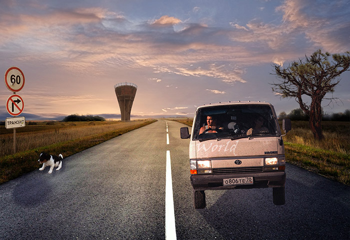

1. vježba-Font
2. vježba-Bezierova krivulja
3. vježba-Boja,transformacije
4. vježba-Gradijent,transparencije
5. vježba-Retuširanje
6. vježba-Koloriranje
7. vježba-Fotomontaža
8. vježba-Cinemagraf


9. vježba-Video obrada
10/11. vježba-Web stranica

Projektni zadatak 1
Projektni zadatak 2